FunkLoad bench report
| Date: | 2014-12-13 02:02:04 |
|---|
Abstract
Testing the critical path of the lab app Bench result of Critical.view_stuff: No test description
Table of contents
- 1 Bench configuration
- 2 Bench content
- 3 Test stats
- 4 Page stats
- 5 Request stats
- 6 Slowest requests
- 7 Page detail stats
- 7.1 PAGE 001: View the upcoming page
- 7.2 PAGE 002: View the index page
- 7.3 PAGE 003: View the user signup page
- 7.4 PAGE 004: Create New User
- 7.5 PAGE 005: view party page
- 7.6 PAGE 006: Create New party
- 7.7 PAGE 007: Inviting user
- 7.8 PAGE 008: Inviting user
- 7.9 PAGE 009: Inviting user
- 7.10 PAGE 010: View index page
- 7.11 PAGE 011: Asking to join
- 7.12 PAGE 012: Asking to join
- 7.13 PAGE 013: Asking to join
- 8 Failures and Errors
- 9 Definitions
1 Bench configuration
- Launched: 2014-12-13 02:02:04
- From: ip-172-31-13-231
- Test: test_critical.py Critical.view_stuff
- Target server: http://ec2-54-148-47-17.us-west-2.compute.amazonaws.com/
- Cycles of concurrent users: [50, 100, 150]
- Cycle duration: 120s
- Sleeptime between request: from 0.0s to 0.5s
- Sleeptime between test case: 0.01s
- Startup delay between thread: 0.01s
- Apdex: 1.5
- FunkLoad version: 1.16.1
2 Bench content
The test Critical.view_stuff contains:
- 13 page(s)
- 8 redirect(s)
- 2 link(s)
- 0 image(s)
- 0 XML RPC call(s)
The bench contains:
- 6394 tests, 5794 error(s)
- 24515 pages, 5794 error(s)
- 28005 requests, 5794 error(s)
3 Test stats
The number of Successful Tests Per Second (STPS) over Concurrent Users (CUs).
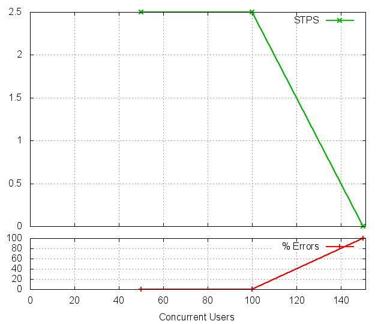
CUs STPS TOTAL SUCCESS ERROR 50 2.500 300 300 0.00% 100 2.500 300 300 0.00% 150 0.000 5794 0 100.00%
4 Page stats
The number of Successful Pages Per Second (SPPS) over Concurrent Users (CUs). Note that an XML RPC call count like a page.
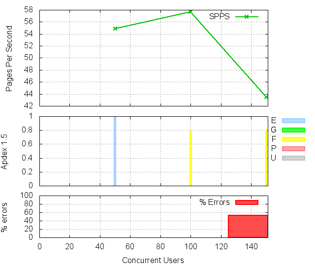 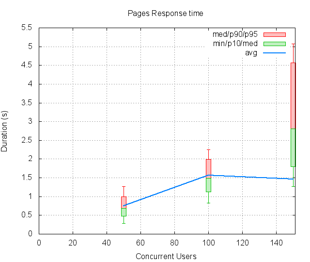
CUs Apdex* Rating SPPS maxSPPS TOTAL SUCCESS ERROR MIN AVG MAX P10 MED P90 P95 50 0.993 Excellent 54.892 90.000 6587 6587 0.00% 0.286 0.745 4.502 0.483 0.682 0.994 1.269 100 0.787 FAIR 57.675 88.000 6921 6921 0.00% 0.822 1.566 3.418 1.124 1.494 1.989 2.251 150 0.802 FAIR 43.442 88.000 11007 5213 52.64% 1.273 1.457 6.489 1.798 2.811 4.571 5.074 * Apdex 1.5
5 Request stats
The number of Requests Per Second (RPS) successful or not over Concurrent Users (CUs).
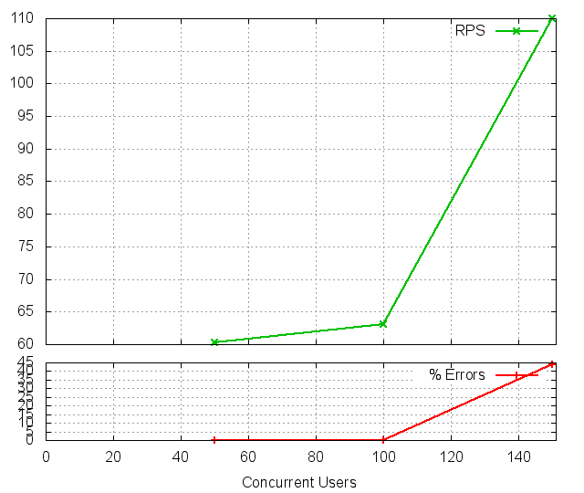 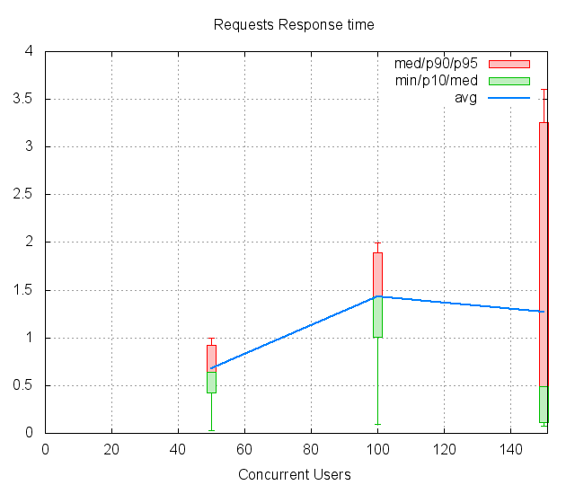
CUs Apdex* Rating* RPS maxRPS TOTAL SUCCESS ERROR MIN AVG MAX P10 MED P90 P95 50 0.993 Excellent 60.333 90.000 7240 7240 0.00% 0.030 0.678 4.502 0.426 0.642 0.918 0.994 100 0.787 FAIR 63.067 88.000 7568 7568 0.00% 0.090 1.432 2.545 1.005 1.435 1.893 1.993 150 0.802 FAIR 109.975 233.000 13197 7403 43.90% 0.075 1.271 5.203 0.117 0.490 3.261 3.601 * Apdex 1.5
6 Slowest requests
The 5 slowest average response time during the best cycle with 50 CUs:
- In page 004, Apdex rating: Good, avg response time: 1.18s, post: //users Create New User
- In page 013, Apdex rating: Excellent, avg response time: 0.85s, get: /parties ``
- In page 012, Apdex rating: Excellent, avg response time: 0.85s, get: /parties ``
- In page 004, Apdex rating: Excellent, avg response time: 0.82s, get: /profiles/12260 ``
- In page 013, Apdex rating: Excellent, avg response time: 0.82s, post: //join_members Asking to join
7 Page detail stats
7.1 PAGE 001: View the upcoming page
Req: 001, get, url //upcoming
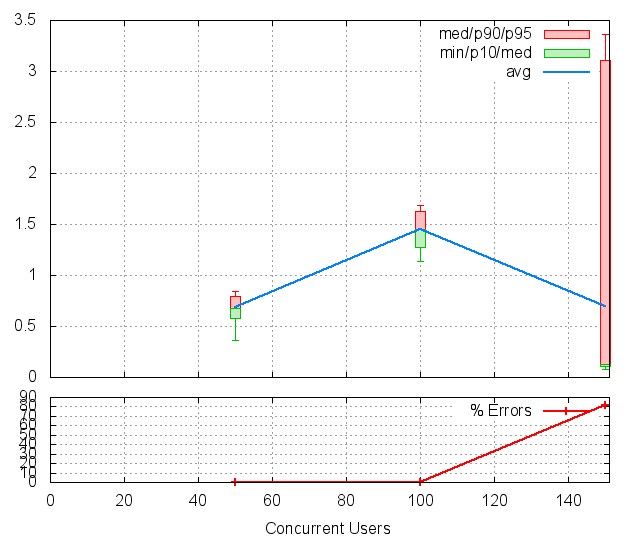
CUs Apdex* Rating TOTAL SUCCESS ERROR MIN AVG MAX P10 MED P90 P95 50 1.000 Excellent 323 323 0.00% 0.364 0.684 1.072 0.574 0.678 0.794 0.841 100 0.812 FAIR 321 321 0.00% 1.134 1.453 1.855 1.278 1.449 1.630 1.686 150 0.907 Good 5828 1087 81.35% 0.078 0.692 4.537 0.112 0.130 3.106 3.359 * Apdex 1.5
Req: 002, link, url /bootstrap/3.2.0/css/bootstrap.min.css
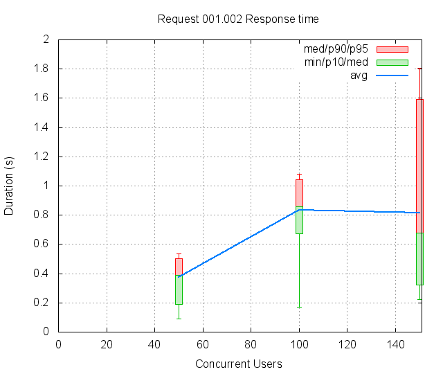
CUs Apdex* Rating TOTAL SUCCESS ERROR MIN AVG MAX P10 MED P90 P95 50 1.000 Excellent 326 326 0.00% 0.089 0.375 0.628 0.190 0.389 0.503 0.534 100 1.000 Excellent 323 323 0.00% 0.172 0.835 1.218 0.671 0.856 1.043 1.080 150 0.942 Excellent 1094 1094 0.00% 0.225 0.815 2.098 0.321 0.679 1.592 1.804 * Apdex 1.5
Req: 003, link, url /assets/application-61c7d55e81567830684b7378699345b0.css
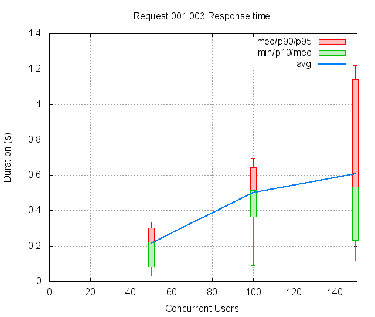
CUs Apdex* Rating TOTAL SUCCESS ERROR MIN AVG MAX P10 MED P90 P95 50 1.000 Excellent 327 327 0.00% 0.030 0.216 0.417 0.084 0.222 0.303 0.335 100 1.000 Excellent 324 324 0.00% 0.090 0.499 0.768 0.366 0.514 0.645 0.692 150 1.000 Excellent 1096 1096 0.00% 0.118 0.609 1.495 0.231 0.535 1.142 1.222 * Apdex 1.5
7.2 PAGE 002: View the index page
Req: 001, get, url //index
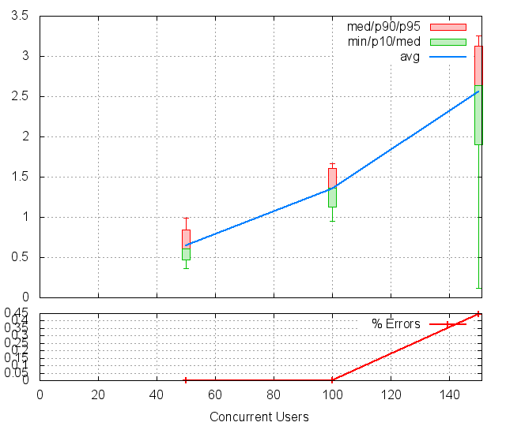
CUs Apdex* Rating TOTAL SUCCESS ERROR MIN AVG MAX P10 MED P90 P95 50 0.999 Excellent 343 343 0.00% 0.360 0.645 1.671 0.473 0.611 0.838 0.994 100 0.874 Good 345 345 0.00% 0.952 1.357 1.857 1.131 1.362 1.612 1.665 150 0.504 POOR 1123 1118 0.45% 0.119 2.560 3.761 1.897 2.634 3.123 3.256 * Apdex 1.5
7.3 PAGE 003: View the user signup page
Req: 001, get, url //users/sign_up
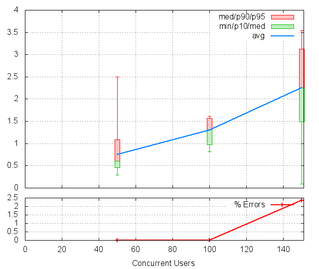
CUs Apdex* Rating TOTAL SUCCESS ERROR MIN AVG MAX P10 MED P90 P95 50 0.964 Excellent 349 349 0.00% 0.286 0.755 3.211 0.459 0.606 1.082 2.494 100 0.904 Good 358 358 0.00% 0.822 1.297 1.972 0.979 1.307 1.565 1.616 150 0.552 POOR 1099 1073 2.37% 0.087 2.252 4.536 1.489 2.253 3.130 3.545 * Apdex 1.5
7.4 PAGE 004: Create New User
Req: 001, post, url //users

CUs Apdex* Rating TOTAL SUCCESS ERROR MIN AVG MAX P10 MED P90 P95 50 0.934 Good 342 342 0.00% 0.382 1.176 4.502 0.646 0.988 2.436 2.995 100 0.631 POOR 379 379 0.00% 1.002 1.806 2.545 1.276 1.839 2.287 2.345 150 0.635 POOR 1013 741 26.85% 0.076 2.131 5.203 0.122 2.134 4.117 4.380 * Apdex 1.5
Req: 002, get, url /profiles/12260
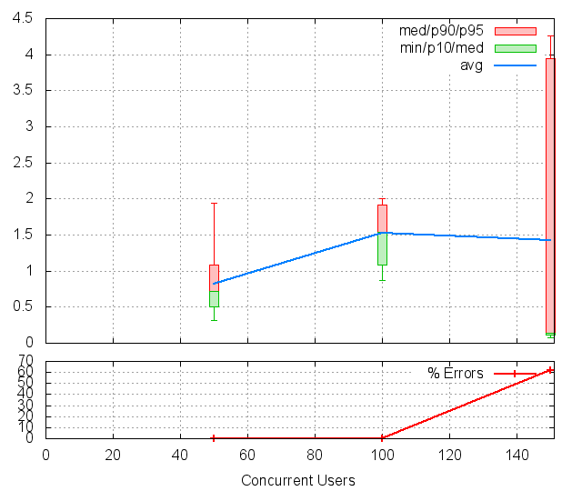
CUs Apdex* Rating TOTAL SUCCESS ERROR MIN AVG MAX P10 MED P90 P95 50 0.963 Excellent 338 338 0.00% 0.315 0.821 3.042 0.501 0.716 1.085 1.935 100 0.722 FAIR 392 392 0.00% 0.870 1.531 2.164 1.084 1.539 1.912 2.005 150 0.811 FAIR 753 285 62.15% 0.075 1.420 4.795 0.110 0.137 3.941 4.255 * Apdex 1.5
7.5 PAGE 005: view party page
Req: 001, get, url //new
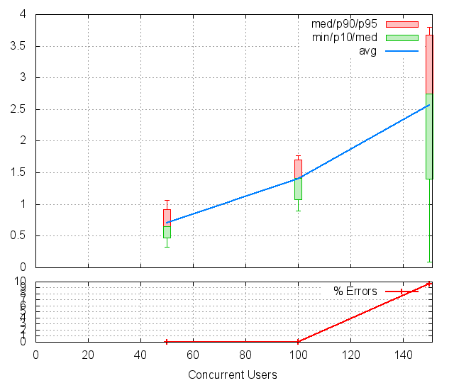
CUs Apdex* Rating TOTAL SUCCESS ERROR MIN AVG MAX P10 MED P90 P95 50 0.986 Excellent 332 332 0.00% 0.324 0.705 3.027 0.472 0.650 0.923 1.062 100 0.841 FAIR 391 391 0.00% 0.897 1.406 2.245 1.078 1.410 1.699 1.775 150 0.560 POOR 299 270 9.70% 0.091 2.565 4.142 1.404 2.742 3.670 3.793 * Apdex 1.5
7.6 PAGE 006: Create New party
Req: 001, post, url //parties
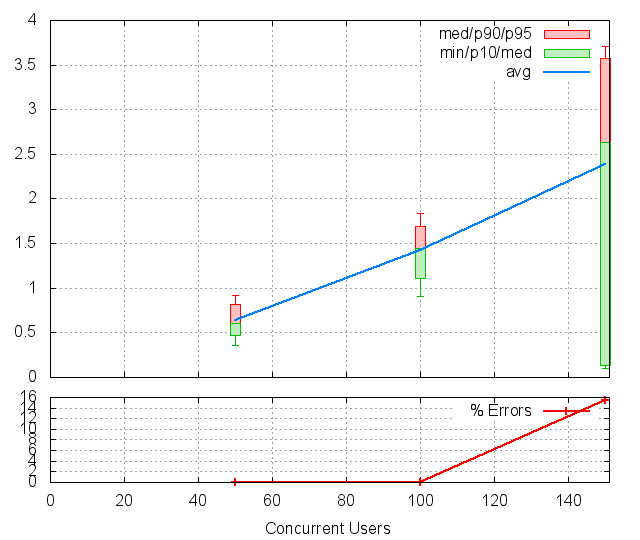
CUs Apdex* Rating TOTAL SUCCESS ERROR MIN AVG MAX P10 MED P90 P95 50 1.000 Excellent 323 323 0.00% 0.354 0.636 1.498 0.475 0.610 0.821 0.919 100 0.809 FAIR 372 372 0.00% 0.903 1.421 2.163 1.113 1.446 1.692 1.834 150 0.583 POOR 271 229 15.50% 0.096 2.384 4.527 0.134 2.632 3.569 3.713 * Apdex 1.5
Req: 002, get, url /parties/11523
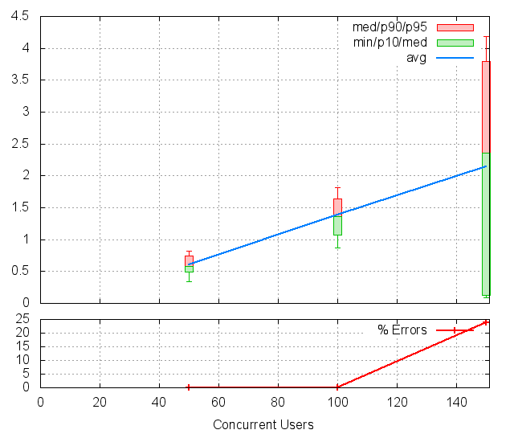
CUs Apdex* Rating TOTAL SUCCESS ERROR MIN AVG MAX P10 MED P90 P95 50 1.000 Excellent 317 317 0.00% 0.334 0.603 1.083 0.490 0.578 0.742 0.818 100 0.854 Good 359 359 0.00% 0.871 1.382 2.128 1.074 1.367 1.644 1.809 150 0.619 POOR 218 166 23.85% 0.084 2.149 4.654 0.120 2.357 3.799 4.187 * Apdex 1.5
7.7 PAGE 007: Inviting user
Req: 001, post, url //createasinvite
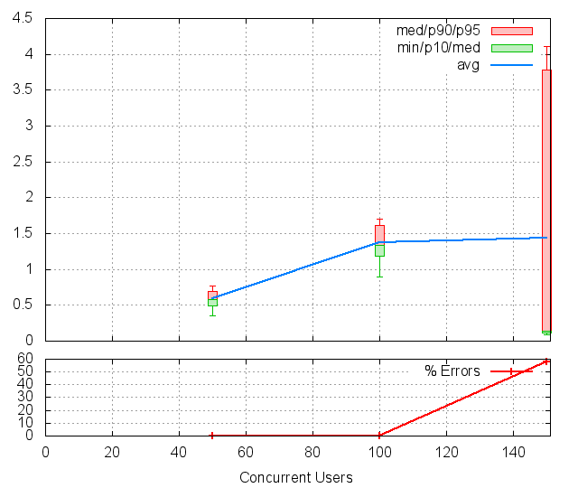
CUs Apdex* Rating TOTAL SUCCESS ERROR MIN AVG MAX P10 MED P90 P95 50 1.000 Excellent 311 311 0.00% 0.347 0.589 1.009 0.487 0.576 0.692 0.768 100 0.886 Good 341 341 0.00% 0.890 1.370 2.166 1.180 1.335 1.609 1.708 150 0.789 FAIR 166 70 57.83% 0.094 1.441 4.496 0.114 0.143 3.786 4.115 * Apdex 1.5
Req: 002, get, url /parties/11512
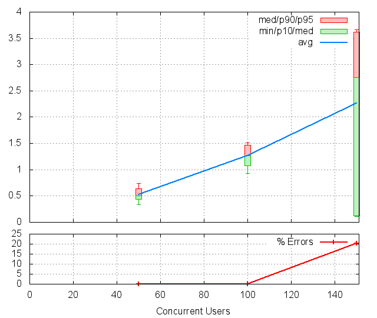
CUs Apdex* Rating TOTAL SUCCESS ERROR MIN AVG MAX P10 MED P90 P95 50 1.000 Excellent 306 306 0.00% 0.338 0.523 0.880 0.436 0.504 0.636 0.735 100 0.972 Excellent 334 334 0.00% 0.929 1.269 2.095 1.079 1.267 1.467 1.515 150 0.616 POOR 69 55 20.29% 0.109 2.258 3.912 0.122 2.760 3.615 3.661 * Apdex 1.5
7.8 PAGE 008: Inviting user
Req: 001, post, url //createasinvite
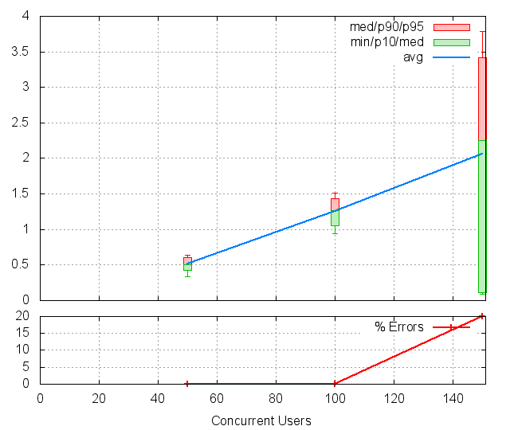
CUs Apdex* Rating TOTAL SUCCESS ERROR MIN AVG MAX P10 MED P90 P95 50 1.000 Excellent 303 303 0.00% 0.334 0.514 0.862 0.426 0.501 0.610 0.635 100 0.970 Excellent 318 318 0.00% 0.942 1.258 1.737 1.057 1.263 1.430 1.516 150 0.618 POOR 55 44 20.00% 0.087 2.065 3.852 0.114 2.256 3.416 3.790 * Apdex 1.5
Req: 002, get, url /parties/11506
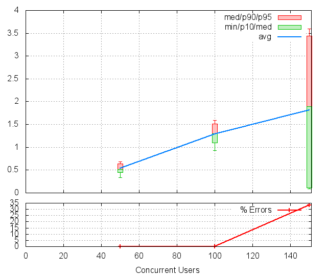
CUs Apdex* Rating TOTAL SUCCESS ERROR MIN AVG MAX P10 MED P90 P95 50 1.000 Excellent 300 300 0.00% 0.337 0.534 0.829 0.444 0.520 0.638 0.679 100 0.944 Excellent 310 310 0.00% 0.935 1.291 1.738 1.093 1.297 1.513 1.585 150 0.692 POOR 39 26 33.33% 0.090 1.816 4.338 0.108 1.889 3.438 3.596 * Apdex 1.5
7.9 PAGE 009: Inviting user
Req: 001, post, url //createasinvite
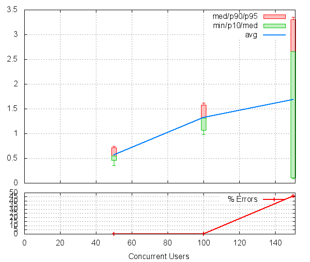
CUs Apdex* Rating TOTAL SUCCESS ERROR MIN AVG MAX P10 MED P90 P95 50 1.000 Excellent 300 300 0.00% 0.348 0.568 0.865 0.457 0.554 0.719 0.746 100 0.895 Good 301 301 0.00% 0.978 1.320 1.946 1.066 1.313 1.578 1.621 150 0.731 FAIR 26 14 46.15% 0.088 1.687 3.718 0.111 2.661 3.305 3.352 * Apdex 1.5
Req: 002, get, url /parties/11506
CUs Apdex* Rating TOTAL SUCCESS ERROR MIN AVG MAX P10 MED P90 P95 50 1.000 Excellent 300 300 0.00% 0.371 0.615 1.029 0.471 0.584 0.796 0.854 100 0.803 FAIR 300 300 0.00% 0.954 1.433 2.052 1.110 1.422 1.748 1.819 150 0.571 POOR 14 12 14.29% 0.117 2.463 3.958 0.136 2.796 3.453 3.958 * Apdex 1.5
7.10 PAGE 010: View index page
Req: 001, get, url //index
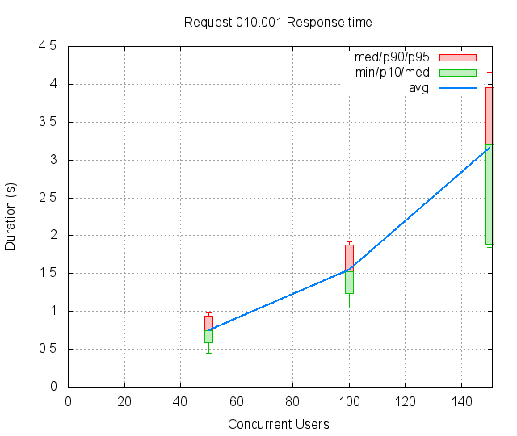
CUs Apdex* Rating TOTAL SUCCESS ERROR MIN AVG MAX P10 MED P90 P95 50 1.000 Excellent 300 300 0.00% 0.449 0.750 1.118 0.584 0.749 0.941 0.981 100 0.735 FAIR 300 300 0.00% 1.041 1.541 2.069 1.241 1.526 1.872 1.917 150 0.500 POOR 11 11 0.00% 1.844 3.152 4.154 1.892 3.214 3.958 4.154 * Apdex 1.5
7.11 PAGE 011: Asking to join
Req: 001, post, url //join_members
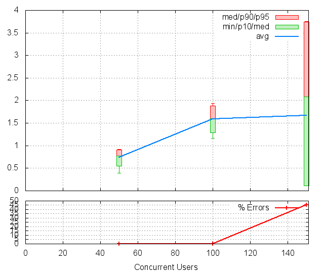
CUs Apdex* Rating TOTAL SUCCESS ERROR MIN AVG MAX P10 MED P90 P95 50 1.000 Excellent 300 300 0.00% 0.394 0.742 1.069 0.554 0.769 0.902 0.923 100 0.695 POOR 300 300 0.00% 1.163 1.590 2.053 1.286 1.604 1.881 1.935 150 0.727 FAIR 11 6 45.45% 0.116 1.669 3.755 0.116 2.082 3.742 3.755 * Apdex 1.5
Req: 002, get, url /parties
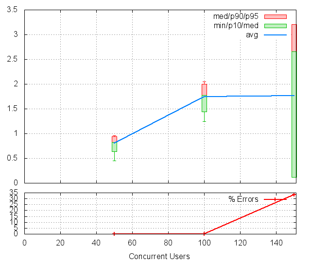
CUs Apdex* Rating TOTAL SUCCESS ERROR MIN AVG MAX P10 MED P90 P95 50 1.000 Excellent 300 300 0.00% 0.454 0.808 1.101 0.637 0.828 0.941 0.962 100 0.595 POOR 300 300 0.00% 1.250 1.741 2.159 1.444 1.778 2.002 2.051 150 0.667 POOR 6 4 33.33% 0.119 1.769 3.206 0.119 2.653 3.206 3.206 * Apdex 1.5
7.12 PAGE 012: Asking to join
Req: 001, post, url //join_members
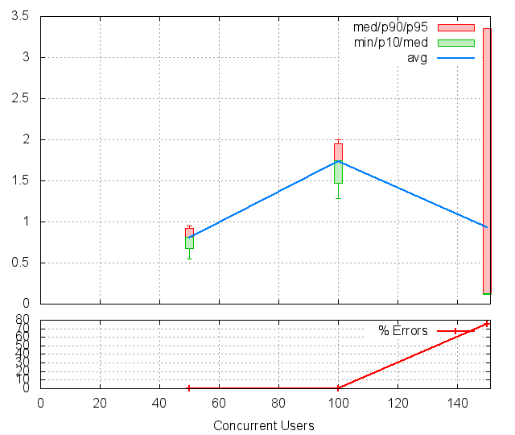
CUs Apdex* Rating TOTAL SUCCESS ERROR MIN AVG MAX P10 MED P90 P95 50 1.000 Excellent 300 300 0.00% 0.549 0.806 1.030 0.677 0.810 0.917 0.947 100 0.562 POOR 300 300 0.00% 1.289 1.735 2.086 1.467 1.746 1.950 2.004 150 0.875 Good 4 1 75.00% 0.119 0.930 3.354 0.119 0.126 3.354 3.354 * Apdex 1.5
Req: 002, get, url /parties
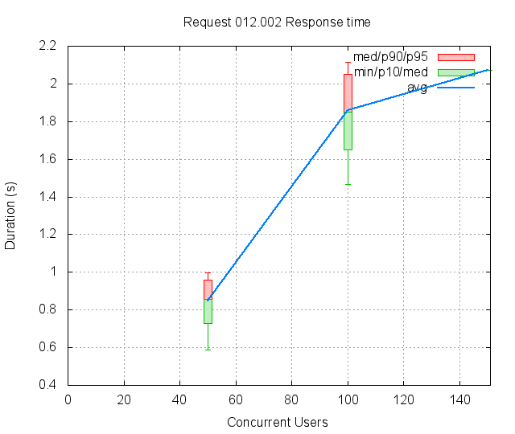
CUs Apdex* Rating TOTAL SUCCESS ERROR MIN AVG MAX P10 MED P90 P95 50 1.000 Excellent 300 300 0.00% 0.586 0.850 1.123 0.727 0.855 0.958 0.995 100 0.505 POOR 300 300 0.00% 1.465 1.857 2.230 1.651 1.852 2.052 2.114 150 0.500 POOR 1 1 0.00% 2.072 2.072 2.072 2.072 2.072 2.072 2.072 * Apdex 1.5
7.13 PAGE 013: Asking to join
Req: 001, post, url //join_members
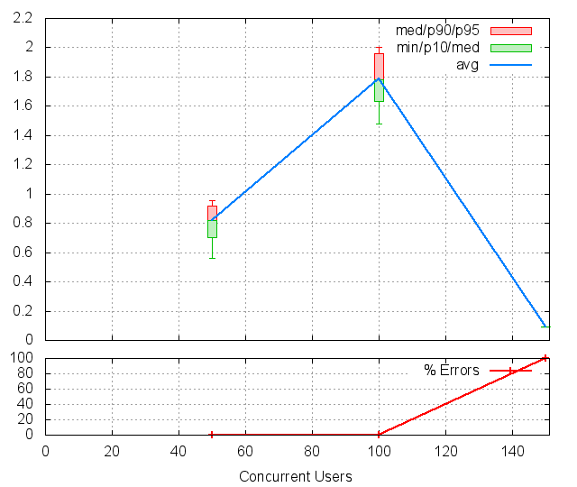
CUs Apdex* Rating TOTAL SUCCESS ERROR MIN AVG MAX P10 MED P90 P95 50 1.000 Excellent 300 300 0.00% 0.561 0.818 1.039 0.703 0.823 0.918 0.955 100 0.503 POOR 300 300 0.00% 1.476 1.790 2.148 1.633 1.784 1.961 2.001 150 1.000 Excellent 1 0 100.00% 0.093 0.093 0.093 0.093 0.093 0.093 0.093 * Apdex 1.5
Req: 002, get, url /parties
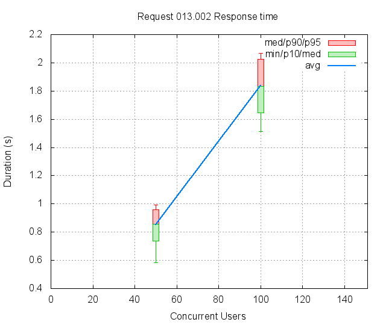
CUs Apdex* Rating TOTAL SUCCESS ERROR MIN AVG MAX P10 MED P90 P95 50 1.000 Excellent 300 300 0.00% 0.584 0.853 1.042 0.736 0.857 0.960 0.992 100 0.500 POOR 300 300 0.00% 1.515 1.836 2.214 1.647 1.835 2.023 2.070 * Apdex 1.5
8 Failures and Errors
8.1 Failures
5794 time(s), code: 503:
No traceback.
9 Definitions
CUs: Concurrent users or number of concurrent threads executing tests.
Request: a single GET/POST/redirect/xmlrpc request.
Page: a request with redirects and resource links (image, css, js) for an html page.
STPS: Successful tests per second.
SPPS: Successful pages per second.
RPS: Requests per second, successful or not.
maxSPPS: Maximum SPPS during the cycle.
maxRPS: Maximum RPS during the cycle.
MIN: Minimum response time for a page or request.
AVG: Average response time for a page or request.
MAX: Maximmum response time for a page or request.
P10: 10th percentile, response time where 10 percent of pages or requests are delivered.
MED: Median or 50th percentile, response time where half of pages or requests are delivered.
P90: 90th percentile, response time where 90 percent of pages or requests are delivered.
P95: 95th percentile, response time where 95 percent of pages or requests are delivered.
Apdex T: Application Performance Index, this is a numerical measure of user satisfaction, it is based on three zones of application responsiveness:
Satisfied: The user is fully productive. This represents the time value (T seconds) below which users are not impeded by application response time.
Tolerating: The user notices performance lagging within responses greater than T, but continues the process.
Frustrated: Performance with a response time greater than 4*T seconds is unacceptable, and users may abandon the process.
By default T is set to 1.5s this means that response time between 0 and 1.5s the user is fully productive, between 1.5 and 6s the responsivness is tolerating and above 6s the user is frustrated.
The Apdex score converts many measurements into one number on a uniform scale of 0-to-1 (0 = no users satisfied, 1 = all users satisfied).
Visit http://www.apdex.org/ for more information.
Rating: To ease interpretation the Apdex score is also represented as a rating:
- U for UNACCEPTABLE represented in gray for a score between 0 and 0.5
- P for POOR represented in red for a score between 0.5 and 0.7
- F for FAIR represented in yellow for a score between 0.7 and 0.85
- G for Good represented in green for a score between 0.85 and 0.94
- E for Excellent represented in blue for a score between 0.94 and 1.
Report generated with FunkLoad 1.16.1, more information available on the FunkLoad site.